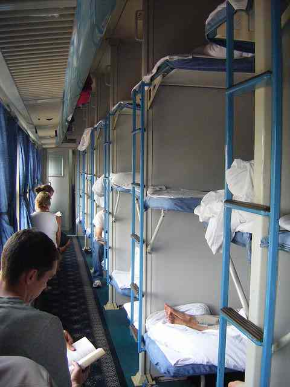
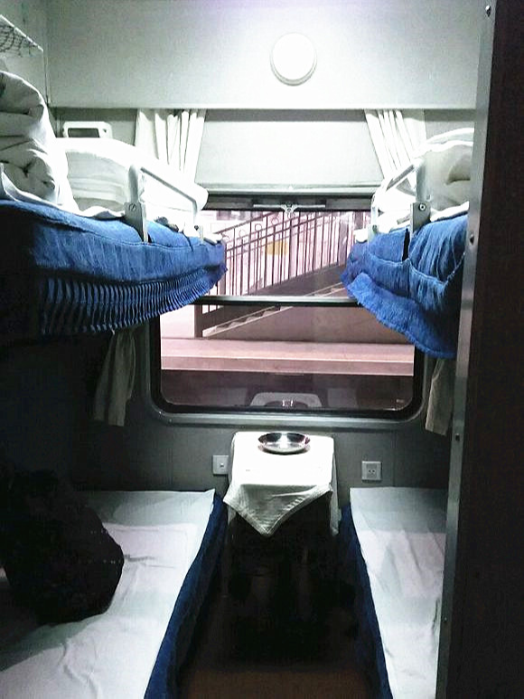
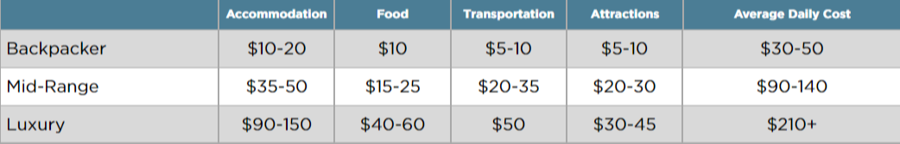

Standing/Hard Seat

Hard Sleeper


The official currency of China is the Renminbi. China is a technologically growing country. Most of the citizens in China prefer to use technology such as their phones to pay for goods. We recommend arriving in China with at least 1500 Renminbi to cover the costs of transportation, hotels, food for the first few days you arrive. Many Banks in China have ATMs that accept international credit/debit cards. All you need to do is to look for an atm with the symbols VISA, MASTERCARD, or INTERACT. Although, many of these banks will charge fees. Fees depend on the Chinese Bank, and also your own bank in your home country.
https://lawandborder.com/temporary-residence-registration-for-foreign-nationals/
Something different from many other countries in the world is that many hotels in China will not welcome foreign visitors to their hotels. This is due to the fact that foreigners must register their address of where they are staying at the local police station. Hotels and Hostels will do this for you, but many hotels do not want to go through the trouble of registering a foreigner so they don’t accept foreigners at all. So when making bookings for your accommodation in china we recommend ensuring that the hotel welcomes foreigners. Payment for hotels/hostels requires a deposit of 100 RMB most time. It is normal for hotels/hostels to photocopy your passport and scan it so they can send it to the police station for registration, but if they ask to keep your physical passport, refuse. Another tip for after you check into a hotel, be sure to take the business card of that hotel. This is so that if you are taking a taxi or transportation and need to go back to your hotel, you can simply show the business card of the hotel to the taxi driver.
The best apps for finding accommodation in China are the following two apps.
https://booking.com and Https://agoda.com.
Food in China is cheap. I mean, really cheap. A meal from a street vendor usually goes for around 7-14 CNY. For this, you might get noodles, rice, pork buns, or soup. A full meal in a sit-down restaurant will cost between 15-54 CNY plus the fee for a bowl of rice and clean bowls (yes, these cost extra!), which is often around 4 CNY. If you stick to the local food, you’ll find it hard to go broke. You could spend less than 70 CNY for an entire day’s worth of food.
In western China, southwestern China, and the interior, food is much cheaper than in the big cities and you can eat for under 35 CNY per day — about half the costs of the big cities as long as you stick to street food/local restaurants.
For Western food, you can expect to pay much higher prices for food that will be a disappointment compared to home — especially if you’re outside of the more Westernized cities like Hong Kong. A western-style sandwich or fast food meal can run about 40 CNY and a cup of coffee can be similarly-priced to back home — sometimes more!
Vegetarians and even vegans will be able to get by relatively easily in the cities with a little planning as China’s history with Buddhism has made the country quite veg-friendly.
Since food is so cheap, there’s no need to self-cater or cook your own meals. You are better off eating the street food and at the restaurants. Moreover, many hostels don’t have kitchen facilities for you to use even if you did go grocery shopping. Therefore, self-catering is not something I recommend. The food is cheap and plentiful, so enjoy it! If you will be buying your own groceries, expect to spend between 250-400 CNY depending on your diet.
In general, sights are affordable in China — even popular attractions such as the Great Wall or the Forbidden City are under 68 CNY. While the Great Wall never kept out invaders, it’s beautiful and is only 45 CNY, the Forbidden City is 60 CNY (40 CNY if you visit between November and March). Smaller temples, activities, and sights are much more reasonably priced and cost under 20 CNY.
While attractions and temples are less than 70 CNY, prices for hikes and outdoor activities tend to be more expensive, often costing around 200 CNY. For example, a trip to the Jade Dragon Snow Mountain costs around 200 CNY, a visit to the Jiuzhai Valley is also 200 CNY (as much as 2,000 CNY if you want to go as part of a tour) and a three-day pass to the Wuyi Mountains in Fujian province is 140 CNY while admission to the Yellow Mountains in Anhui province is 190 CNY. You’ll still need to pay for transportation to these places as well.
Public Transportation – Buses are the most popular way to travel and usually cost between 1-3 RMB within a city. Major cities also have extensive underground systems that are less than 6 RMB per ride. The Airport Express line in Beijing costs 25 RMB.
Be sure to check the air quality every morning before heading out.
Bus – Buses are usually cheaper than trains when it comes to intercity travel so they are your best bet for short distances (anything under 8 hours).
Train – For long-distance travel around the country, trains are an affordable and often unique choice. Train seats often come in 4 different options, with the cheapest option being first.
1. The standing seat is usually the cheapest option, but with this option, guests are not given a seat on a train and must stand the entire journey. I do not recommend this since it becomes a hassle to yourself and others on the train
2. Hard seat is designed for trips lasting 1-3 Hours. It costs a little more than the standing seat but you are given a seat which you can sit on.
3. The Hard sleeper comes in sections of 6 bunk beds, a lower, middle, or top bunk, that is shared with other guests of the train. Perfect for long trips since you can take a nap or rest. But be aware, they are not an abundance of outlets on these trains, so we advise getting a power bank if its a long trip
4. Perfect for groups, solo travelers, and families that want more privacy and less sound. These soft sleepers come with a door that you can close.
For overnight trains, keep in mind that the lower bunk is usually cheaper as it is closer to the noise. Top bunks will be more expensive, though they occasionally have very little space to offer (even though you pay more); it is not uncommon to be unable to sit all the way up. But you do get more privacy, which is worth it in my opinion!
Recommended: Trip.com
Flying – There are plenty of regional carriers in China when it comes to flights. In fact, there are over 30 domestic airlines in the country! Some of the larger ones are Air China, China Eastern, China Southern, and Southwest Airlines. Just keep in mind that many flights rarely leave on time, so be mindful of your connections when booking! Also please read carefully the terms and conditions of each flight. Some flights may require you to pay up to 200 RMB per luggage/carry on that you take with you on the flight.
Recommended website: Skyscanner.com
Since China is such a large country, climate and temperature change drastically from region to region. Sub-tropical Hong Kong is going to have much different weather than the steppes of Inner Mongolia or the mountain ranges of Tibet and Western China.
Summers in China (June-August) is the peak time to visit, though it also the hottest time. Temperatures will soar into the 30s (87-92 F) and can get quite humid. The pollution and air quality can also be ongoing concerns during this time. Expect inflated prices and larger crowds during these months.
September-October is a great time to visit China, as long as you can dodge the hectic Golden Week holiday in early October. The weather will cool to just under 20C (68 F), which is much more pleasant for hiking and exploring.
Traveling to China in the winter is rare, unless you’re heading to Hong Kong where the weather is still pleasant at 20C (68 F). Places like the Great Wall are occasionally closed due to weather, and regions like Tibet can drop to -13 C (9F) overnight. That being said, China has a fun winter festival called the Harbin Ice and Snow Festival where you’ll find huge, record-breaking ice sculptures.
1. Wechat - The Ultimate communication app for china. Similar to WhatsApp and Facebook, it is used by everyone in China. I highly recommend getting this app and find it difficult to survive in china without it. This app also allows you to order food, buy tickets, etc.
2. Google Maps - A must have to navigate this country if you do not speak Chinese.
3. Google Translate - The perfect tool for speaking to Chinese people. Please make sure you download the Chinese language in the app so it can work offline!
4. A VPN - As you may, or may not know, many western apps such as Google, Youtube, Facebook, Reddit are all banned in China. It is impossible to access these apps without the Use of a VPN. They are many VPNs that work in china, and you can check them all out here and choose which one works best for you. https://www.comparitech.com/blog/vpn-privacy/whats-the-best-vpn-for-china-5-that-still-work-in-2016/
5. Currency Converter